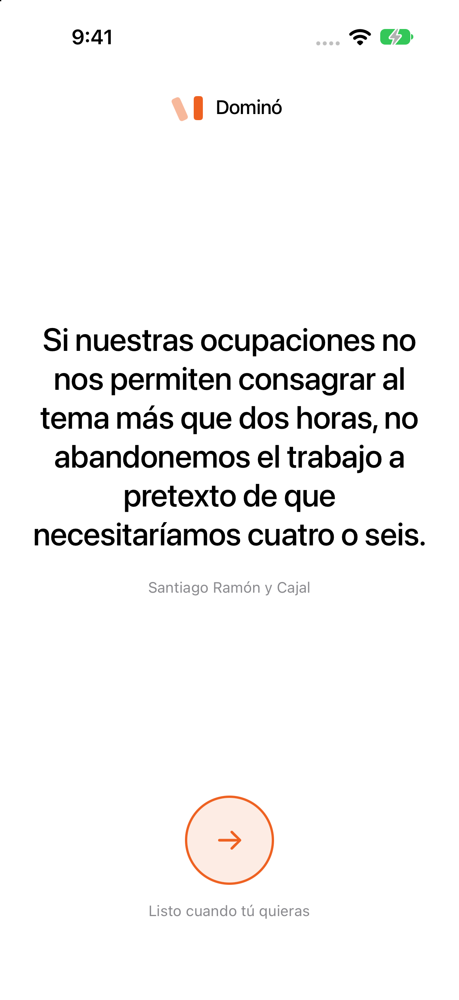
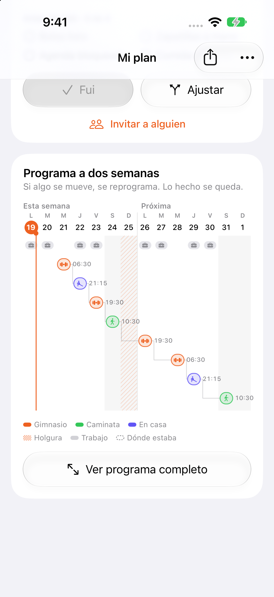
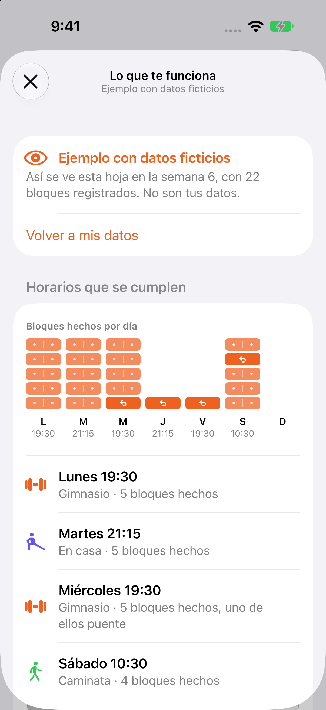
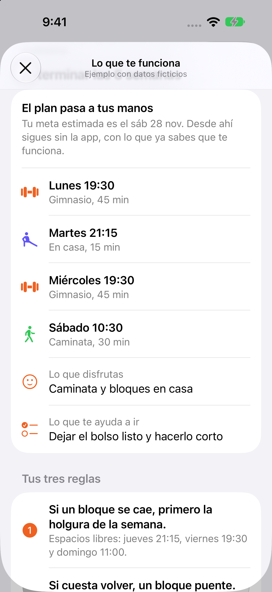

Dominó
Camila no necesita otra rutina: necesita que una falta no tumbe la obra.
Hackatón Señales de Makana · Caso 01: Camila
JP Meniconi

Camila, 34 años, jefa de proyectos en una constructora
No abandona por falta de tiempo ni de ganas.
Dejó de ir incluso en semanas tranquilas. La tumba lo que pasa después de faltar.
Y cada reinicio es más grande que el anterior.
- Falta una vez
- «Mañana parto»
- Siente que parte de cero
- La culpa la aleja más
Nuestra lectura
En el trabajo, nunca demuele una obra por un atraso. Con su cuerpo, sí.
Usa la holgura. La entrega no se mueve.
Una falta bota todo. Vuelve a partir de cero.
Dominó lleva a su cuerpo la regla que ya domina en sus obras.
Por qué este problema
Atacamos el momento después de faltar.
Dónde se juega
- 61.293 socios
Lo que más subió la asistencia: un premio por volver después de faltar.
Milkman et al., 2021 - 4 por semana
Durante 6 semanas: el hábito lo forma la frecuencia, no la intensidad.
Kaushal y Rhodes, 2015 - 12 semanas
Ahí se juega el abandono.
Sperandei et al., 2016
Por qué no le resultó antes
Recordatorios y premios funcionan solo mientras duran.
Milkman et al., 2021La mensualidad no motiva por sí sola. No usamos la culpa por el pago.
DellaVigna y Malmendier, 2006Rutinas y rachas suponen una semana perfecta. Ninguna dice qué hacer después de faltar.
La solución
Su plan, como una carta Gantt viva.
-
Holgura
Si cabe en la misma semana, se mueve y nada más cambia.
Tu meta no se mueve
-
Bloque puente
Si cuesta volver, uno corto el mismo día. Cuenta completo.
Tu meta no se mueve
-
Efecto dominó
Si no cabe, los siguientes se corren un espacio. Nunca se acumula deuda.
Tu meta se corre un espacio
- Nada cambia sin su confirmación.
- Su avance nunca baja: una falta no bota ninguna ficha.
Una semana de Camila, en su iPhone
Demo en vivo
Respaldo de la demo
Su semana real
El plan esquiva su trabajo.
Dominó lee un solo calendario, «Camila · Dominó», y pone cada bloque donde no choca.
- Si una reunión choca una semana, el bloque pasa a un espacio libre de esa semana.
- Si choca casi todas las semanas, se cambia el horario, no la meta.
Calendario ficticio, como pide el concurso. Los demás calendarios no se muestran ni se guardan.

Cuando termina el programa
El plan pasa a sus manos.
«Lo que te funciona» le muestra qué horarios se cumplen, qué disfruta y cómo vuelve. Al terminar las 6 semanas, le queda un manual con tres reglas.
- Si un bloque se cae, primero la holgura.
- Si cuesta volver, un bloque puente.
- Nunca recuperar con más bloques.
Lo guarda o lo manda como texto, sin sus faltas.


Qué dejamos fuera
Lo que no hicimos, a propósito.
- Recordatorios y correos
- Ya silenció las notificaciones, y funcionan solo mientras duran.
- Rachas que vuelven a cero
- El día que falla, la culpa la saca de nuevo.
- Avisar a su círculo cuando falta
- Exponer faltas genera vergüenza. Compartir su avance es decisión de ella.
- Rutinas, nutrición, wearables, cuentas y servidor
- No son su problema y no caben en dos días.
- Su calendario real
- El concurso exige datos ficticios.
Cómo sabríamos si funciona
Lo mediríamos en vez de suponerlo.
- Tiempo de regresodespués de faltar
- Frecuenciapor semana, de la 1 a la 6
- Permanenciaen la semana 12
Comparado con un grupo de control.
DominóUna falta no tumba la obra.
 github.com/jpmeniconi/efecto-domino
github.com/jpmeniconi/efecto-domino